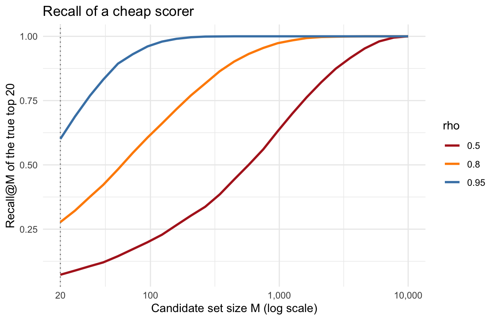
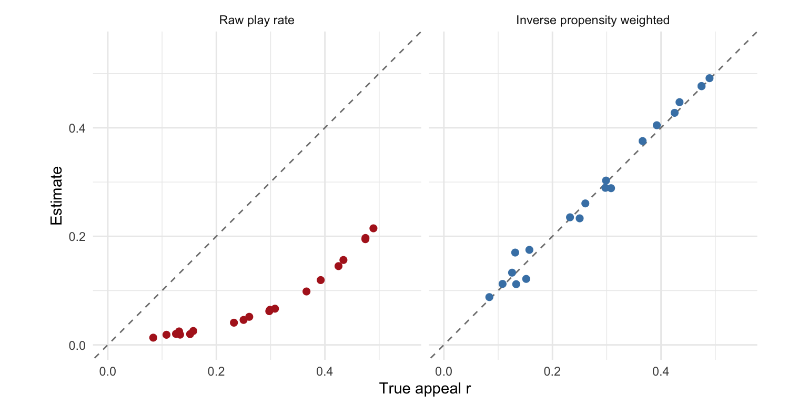

It is Friday night, and a member opens Netflix on their TV. Within a second, the home page fills with rows of titles: “Continue Watching”, “Trending Now”, “Because You Watched Titanic”, “Top Picks for You”. Behind every one of those rows is a ranker. A ranker receives a query, here the member and their context, picks a handful of titles out of a catalog of thousands, and decides what order to show them in.
The stakes are high and the time is short. Netflix reports that a typical member loses interest after perhaps 60 to 90 seconds of choosing, having reviewed 10 to 20 titles on one or two screens, and that recommendations influence about 80% of the hours streamed (Gomez-Uribe and Hunt, 2015). If the right title is not in the first few tiles of the first few rows, the member may never find it.
This post builds a ranker from first principles, using a single Netflix row, “Top Picks for You”, as the running example. We will start from the problem we would like to solve, see why it is intractable, and watch the standard three phase architecture fall out of the approximations we are forced to make:
Candidate generation: cheaply narrow the whole catalog down to a few hundred titles.
Utility prediction: use an expensive ML model to predict how much the member will value each candidate.
Reranking: assemble the final row, accounting for the fact that titles in a row interact with one another.
Netflix has described parts of its system publicly, and we cite those descriptions where they exist. Elsewhere, the Netflix setting is our illustration of how a method would apply, not a claim about what Netflix runs in production.
The problem we would like to solve
Let the catalog contain \(N\) items, indexed by \(j\). In our example, an item is a title, and \(N\) is in the thousands. A query \(q\) arrives. On the home page, \(q\) is the member and their context: their viewing history, the device (a TV, not a phone), and the time (Friday night). When the member types into the search box, \(q\) also includes the text. We must display a row of \(K\) titles in order,
\[\pi = (j_1, j_2, \dots, j_K),\]
where \(j_k\) is the title shown at position \(k\). Let \(U(q, \pi)\) be the utility generated by showing row \(\pi\) to query \(q\): the probability that the member presses play, the expected minutes they stream, or whatever we value. The ideal ranker solves
\[\pi^*(q) = \arg\max_\pi U(q, \pi).\]
There are \(N!/(N-K)!\) ordered rows. With \(N = 10{,}000\) titles and \(K = 20\) tiles, that is roughly \(10^{80}\) rows. We cannot evaluate them all, so we need structure.
The naive solution
The simplest structure comes from a model of how members scan a row. Say the member examines position \(k\) with probability \(\theta_k\), where \(\theta_1 \ge \theta_2 \ge \dots \ge \theta_K > 0\). On a TV, only the first few tiles of a row are visible before the member scrolls right, and the 60 to 90 second attention span means most never scroll far. If the member examines title \(j\), it generates expected utility \(u(q, j)\), a scalar. Make two assumptions:
(A1) No interactions. The utility of title \(j\) does not depend on which other titles are in the row.
(A2) Exhaustive scoring. We can evaluate \(u(q, j)\) for every one of the \(N\) titles.
Under (A1), the row utility is a weighted sum over positions,
The three phases of a ranker exist because these assumptions fail in different ways.
(A2) fails because a good model of \(u\) is expensive, and it must run for every row on every home page that every member opens. Candidate generation exists to cut \(N\) down to a manageable \(M\).
\(u\) is unknown. Utility prediction estimates it with an ML model, \(\hat u(q, j)\).
(A1) fails because titles in a row do interact: a row of ten romantic comedies is worth less than ten times one romantic comedy, because the member only needs one of them. Reranking exists to optimize the row as a whole.
Phase 1: Candidate generation
The job of candidate generation is to return a set \(\mathcal{C}_M(q)\) of \(M\) titles, where \(K \ll M \ll N\). For the “Top Picks” row, think of a few hundred candidates out of 10,000 titles. The scoring here must be cheap, much cheaper than the model in phase 2, so it will be less accurate. Netflix’s catalog is small compared with services that rank hundreds of millions of videos or products, so its funnel can be shallower, but the logic is the same.
Candidate generation is a ceiling on the entire system. If a title is not retrieved, no downstream model can ever show it. So candidate generation is judged by recall, not precision. Let \(\pi^*(q)\) be the set of the \(K\) titles with the highest true utility. Then
The numerator counts how many titles of the ideal row survived retrieval, and dividing by \(K\) turns that count into the fraction of the ideal row that is still within reach of phases 2 and 3. Equivalently, it is the probability that a title drawn at random from the ideal row made it into the candidate set. Even if the downstream phases were perfect, the best row they could build would contain only \(\text{Recall@}M \times K\) of the ideal titles. Note that the denominator is \(K\), not \(M\): retrieving extra titles that are not in the ideal row costs nothing in this metric, which is why candidate generators are free to return far more titles than the row can show.
How large does \(M\) need to be? Suppose the cheap scorer produces a score \(s_j\) that is correlated with the true utility \(u_j\) (dropping \(q\) for now) with correlation \(\rho\),
For each of 200 members, we retrieve the top \(M\) titles by \(s\) out of \(N = 10{,}000\), and ask what fraction of that member’s true top \(K = 20\) we caught.
Code
set.seed(1)N <-1e4# titles in the catalogK <-20# tiles in the rown_members <-200M_grid <-round(10^seq(log10(K), log10(N), length.out =25))# Recall@M at every candidate set size M, for one simulated memberrecall_curve <-function(rho) { u <-rnorm(N) eps <-rnorm(N) s <- rho * u +sqrt(1- rho^2) * eps top_K <-order(u, decreasing =TRUE)[1:K] ord <-order(s, decreasing =TRUE)tibble(M = M_grid, recall =map_dbl(M_grid, \(M) mean(top_K %in% ord[1:M])))}recall <-expand_grid(rho =c(0.5, 0.8, 0.95), member =1:n_members) %>%mutate(curve =map(rho, recall_curve)) %>%unnest(curve) %>%group_by(rho, M) %>%summarise(recall =mean(recall), .groups ="drop")

With a correlation of 0.8, a candidate set of about 200 titles, ten times the row, recovers only about three quarters of the true top 20, and it takes more than 400 titles to recover 90%. This is why candidate generation returns hundreds of titles rather than exactly \(K\), and why it pays to combine several cheap scorers that make different mistakes. Below are the most common ones.
Lexical retrieval
When the member types into the search box, the oldest method is to match words. Lexical retrieval needs no training data, and it handles exact matches on rare terms, such as an actor’s name, which embedding models can blur. An inverted index maps each term \(t\) to the list of titles whose text (name, synopsis, cast) contains it. When the member searches for “heist”, we look up the entry for “heist” and get back only the titles whose text mentions a heist, rather than scanning all \(N\) titles. Matched titles are scored with a formula such as BM25,
Here \(\text{tf}_{t,j}\) is the term frequency, the number of times term \(t\) appears in title \(j\)’s text, \(|j|\) is the length of that text, \(\overline{|j|}\) is the average length, and \(\kappa_1, \kappa_2\) are tuning constants (usually written \(k_1\) and \(b\); we rename them to avoid a clash with position \(k\)). \(\text{IDF}(t)\) is the inverse document frequency, which grows as fewer titles contain \(t\), for example \(\log\big((N - n_t + 0.5)/(n_t + 0.5)\big)\) where \(n_t\) is the number of titles containing \(t\). Each piece has a job:
\(\text{IDF}(t)\) says rare words are more informative than common ones. Nearly every synopsis contains “the”, but few contain “heist”.
The fraction saturates as \(\text{tf}_{t,j}\) grows: it is bounded by \(\kappa_1 + 1\). A synopsis that says “heist” five times is not five times more relevant than one that says it once.
The \(\kappa_2\) term discounts long texts, such as a documentary series with a long episode guide, which contain many terms by chance.
On the BEIR benchmark, which evaluates retrievers on domains they were not trained on, BM25 proved to be a robust baseline that many neural retrievers failed to beat (Thakur et al., 2021).
The weakness of lexical retrieval is vocabulary mismatch. A member who types “bank robbery movies” does not match a synopsis that only says “a crew of thieves plans the perfect heist”.
Collaborative filtering
The “Top Picks” row has no search text at all, so we need to use behavior. Netflix made this problem famous with the Netflix Prize. In 2006, Netflix released about 100 million movie ratings and offered $1 million to anyone who could improve the root mean squared error of its in-house rating predictor, Cinematch, by 10%. The data contained no movie descriptions to speak of, only who rated what. Here, the query \(q\) is simply the member, with no other context, and an item is a movie. The question is which movies a member will like, based only on the viewing history of that member and of everyone else.
The simplest approach is item-to-item collaborative filtering, which Amazon described in Linden, Smith and York (2003). If many members who watched movie \(j\) also watched movie \(j'\), then \(j'\) is a good candidate for anyone who just watched \(j\). To make this precise, arrange engagement into a matrix \(Y\) with one row per member and one column per movie, where \(y_{qj}\) records member \(q\)’s engagement with movie \(j\), for example \(y_{qj} = 1\) if member \(q\) watched movie \(j\) and 0 otherwise. Column \(j\) of \(Y\), written \(y_{\cdot j}\), lists every member’s engagement with movie \(j\).
Consider a tiny Netflix with seven members and six movies: three romances (Notebook, Titanic, La La Land) and three action movies (Die Hard, The Matrix, Alien). We will come back to these movies throughout the post.
With 0/1 engagement, \((Y^\top Y)_{jj'}\) counts the members who watched both \(j\) and \(j'\), and the diagonal entry \((Y^\top Y)_{jj}\) counts the members who watched \(j\) at all. Raw counts favor popular movies, since a blockbuster co-occurs with almost everything, so the counts are normalized. Dividing by the lengths of the two columns gives the cosine similarity between them,
Movie \(j\)’s neighbor list is the handful of movies \(j' \ne j\) with the largest \(\text{sim}(j, j')\), stored with their scores. The name comes from nearest neighbors: if we think of movies as points and similarity as closeness, the list holds movie \(j\)’s nearest neighbors. In our tiny Netflix, Notebook was watched by members 1, 2 and 7. Titanic was watched by members 1, 3 and 7, an overlap of two members, so \(\text{sim} = 2/\sqrt{3 \cdot 3} \approx 0.67\). La La Land was watched by members 2, 3, 5 and 7, also an overlap of two, so \(\text{sim} = 2/\sqrt{3 \cdot 4} \approx 0.58\). No one who watched Notebook watched an action movie. Notebook’s neighbor list is (Titanic 0.67, La La Land 0.58). We can compute every movie’s similarities at once.
Code
YtY <-t(Y) %*% Y # co-occurrence countssim <- YtY /sqrt(diag(YtY) %o%diag(YtY)) # cosine similarity between columns of Yround(sim, 2)
The neighbor lists are computed offline into a lookup table. At request time, we look up the lists of the member’s recent movies, take their union, and score each candidate by the sum of its similarities to the member’s movies. No model runs at request time, which is why this method is very cheap. This is exactly the shape of Netflix’s “Because You Watched” row, which Gomez-Uribe and Hunt describe as driven by an unpersonalized “sims” algorithm that computes a ranked list of similar videos for every video in the catalog.
Matrix factorization
The approach that dominated the Netflix Prize was matrix factorization. Early in the competition, Simon Funk described a simple version in a blog post, Try This at Home, that jumped near the top of the leaderboard. The winning teams built on it, as summarized by Koren, Bell and Volinsky (2009). Netflix later wrote that it put a matrix factorization model (SVD), together with a restricted Boltzmann machine, into production after the competition.
Return to the engagement matrix \(Y\). Rather than comparing its columns pairwise, we approximate the whole matrix. Any real matrix has a singular value decomposition (SVD)
\[Y = W \Sigma V^\top,\]
where \(R\) is the rank of \(Y\), \(W\) has one row per member and \(R\) orthonormal columns, \(V\) has one row per movie (\(N\) rows) and \(R\) orthonormal columns, and \(\Sigma = \text{diag}(\sigma_1, \dots, \sigma_R)\) is an \(R \times R\) diagonal matrix of singular values sorted so that \(\sigma_1 \ge \sigma_2 \ge \dots \ge \sigma_R > 0\). Keep only the first \(d\) columns of \(W\) and \(V\) and the first \(d\) singular values, written \(W_d\), \(V_d\) and \(\Sigma_d\). Then
\[Y_d = W_d \Sigma_d V_d^\top\]
is a rank \(d\) matrix, and by the Eckart–Young theorem it is the closest rank \(d\) matrix to \(Y\) in the sum of squared entries. To get two embedding matrices, split \(\Sigma_d\) evenly between the two sides,
each with \(d\) columns. Row \(q\) of \(\Phi\) is member \(q\)’s embedding, and row \(j\) of \(\Psi\) is movie \(j\)’s embedding. Write them as column vectors \(\phi_q, \psi_j \in \mathbb{R}^d\). Since \(\Sigma_d^{1/2} \Sigma_d^{1/2} = \Sigma_d\), the two matrices multiply back to the rank \(d\) approximation,
Each of the \(d\) dimensions acts like a latent taste. \(V_{jl}\) measures how much movie \(j\) expresses taste \(l\), \(W_{ql}\) measures how much member \(q\) has it, and \(\sigma_l\) measures how much of the variation in \(Y\) that taste explains. The recommendations come from what the approximation gets “wrong”. A rank \(d\) matrix cannot reproduce every 0 in \(Y\), so a movie the member has not watched, but that resembles the movies they did watch, gets a positive \(\hat y_{qj}\). Those are the candidates. The split of \(\Sigma_d\) is a convention; \(\Phi = W_d \Sigma_d\) and \(\Psi = V_d\) give the same \(\hat y_{qj}\).
Let’s factor the tiny Netflix matrix \(Y\) from above.
Code
d <-2svd_Y <-svd(Y)# The signs of singular vectors are arbitrary; flip them so that Notebook loads positively on each dimensionflip <-sign(svd_Y$v[1, 1:d])W_d <- svd_Y$u[, 1:d] %*%diag(flip)V_d <- svd_Y$v[, 1:d] %*%diag(flip)Sigma_d <-diag(svd_Y$d[1:d])Phi <- W_d %*%sqrt(Sigma_d)Psi <- V_d %*%sqrt(Sigma_d)dimnames(Phi) <-list(rownames(Y), c("taste1", "taste2"))dimnames(Psi) <-list(colnames(Y), c("taste1", "taste2"))round(Psi, 2)
The first dimension is positive for every movie. It measures how much a movie is watched overall. The second dimension separates Notebook and Titanic (positive) from the action movies (negative), which the SVD discovered without being told any genres. La La Land sits near zero because fans of both genres watched it. Multiplying the embeddings gives the predicted affinities.
Look at member 3, who watched Titanic, La La Land and Die Hard. Among the movies they have not watched, Notebook scores 0.51 and The Matrix and Alien score 0.39, so the top candidate is the romance, in line with two of their three movies. Member 4 watched Die Hard and The Matrix. Their top unwatched movie is Alien at 0.55, the remaining action movie.
Missing is not the same as zero
The SVD needs every entry of \(Y\). For watch data, a 0 meaning “did not watch” is reasonable. For the star ratings in the Netflix Prize it is not: a missing rating does not mean the member would rate the movie 0 stars. It means we do not know.
To see this, give our tiny Netflix star ratings. Let \(Y^\star\) be the matrix of ratings, with the same rows and columns as \(Y\), where \(y^\star_{qj} \in \{1, \dots, 5\}\) is member \(q\)’s rating of movie \(j\), and let \(\mathcal{O}\) be the set of pairs \((q, j)\) for which a rating exists. Each member has rated four of the six movies, including some movies they disliked, and the other two ratings are missing.
Notebook Titanic LaLaLand DieHard Matrix Alien
member1 5 4 NA 1 NA 2
member2 4 NA 5 2 1 NA
member3 NA 5 4 2 NA 1
member4 1 NA 2 5 4 NA
member5 NA 1 2 NA 5 4
member6 2 1 NA 4 NA 5
member7 5 5 4 NA 2 NA
Members 1, 2, 3 and 7 like the romances and members 4, 5 and 6 like the action movies, but each member is missing two ratings. Filling the missing entries with 0 would tell the SVD that member 1 rated La La Land lower than Die Hard, which they gave 1 star.
Fitting only the observed ratings
Funk’s method, despite being called SVD, does not compute a decomposition at all. It never fills in the missing entries. Instead, it chooses the embeddings to fit only the observed ratings, with a ridge penalty \(\eta > 0\) to avoid overfitting,
Here \(\mu\) is a scalar, the average of the observed ratings. Subtracting it means the embeddings only have to explain how a rating differs from a typical rating, and the ridge penalty shrinks predictions toward \(\mu\) rather than toward 0 stars. \(\Phi\) and \(\Psi\) are now free parameters with the same shapes as before, one row per member and one row per movie, each with \(d\) columns. We write the minimizers as \(\Phi^\star\) and \(\Psi^\star\), with rows \(\phi^\star_q\) and \(\psi^\star_j\), to keep them apart from the SVD embeddings. The predicted rating is
and it is defined for every pair \((q, j)\), including the missing ones. Those predictions are what we use to rank candidates.
There is no closed form for the minimizer, because the loss involves the product \(\phi_q^\top \psi_j\) of two unknowns. The loss is not convex in \((\Phi, \Psi)\) jointly. But it becomes a ridge regression as soon as we fix one of the two matrices.
Alternating least squares (ALS) algorithm
Fix \(\Psi\) and look at the terms of the loss that involve a single member’s embedding \(\phi_q\). Let \(\mathcal{O}_q = \{j : (q, j) \in \mathcal{O}\}\) be the movies that member \(q\) rated. The other members’ terms do not involve \(\phi_q\), so minimizing over \(\phi_q\) means minimizing
This is a ridge regression of member \(q\)’s centered ratings on the embeddings of the movies they rated, with \(\phi_q\) playing the role of the coefficients. Setting the gradient with respect to \(\phi_q\) to zero,
Stack the rows \(\psi_j^\top\) for \(j \in \mathcal{O}_q\) into the \(|\mathcal{O}_q| \times d\) matrix \(\Psi_{\mathcal{O}_q}\), and the ratings into the vector \(y^\star_{q, \mathcal{O}_q}\) of length \(|\mathcal{O}_q|\). Then \(\sum_{j \in \mathcal{O}_q} \psi_j \psi_j^\top = \Psi_{\mathcal{O}_q}^\top \Psi_{\mathcal{O}_q}\), and the update is
The inverse always exists: \(\Psi_{\mathcal{O}_q}^\top \Psi_{\mathcal{O}_q}\) is positive semidefinite, and adding \(\eta I_d\) with \(\eta > 0\) makes it positive definite. By the symmetry of the loss, fixing \(\Phi\) and letting \(\mathcal{O}^j = \{q : (q, j) \in \mathcal{O}\}\) be the members who rated movie \(j\) gives
ALS alternates between updating every \(\phi_q\) and updating every \(\psi_j\). Each half-step minimizes the loss exactly over one matrix while the other is held fixed, so the loss can never increase. Because the joint problem is not convex, ALS converges to a local minimum that can depend on the starting point. The members’ updates do not depend on each other, and neither do the movies’, so each half-step parallelizes across machines.
Let’s fit the tiny Netflix ratings with ALS, using \(d = 2\) and \(\eta = 1\).
Code
observed <-!is.na(Y_star)mu <-mean(Y_star[observed])eta <-1# Ridge regression of each row of Y on the fixed embeddings, using only that row's observed entriesridge_rows <-function(Y, fixed, observed) {map(seq_len(nrow(Y)), \(row) { O_row <- observed[row, ] # O_q for a member, O^j for a movie fixed_O <- fixed[O_row, , drop =FALSE]as.vector(solve(t(fixed_O) %*% fixed_O + eta *diag(d),t(fixed_O) %*% (Y[row, O_row] - mu))) }) %>%list_c() %>%matrix(ncol = d, byrow =TRUE)}# One ALS iteration: update every phi_q with Psi fixed, then every psi_j with Phi fixedals_step <-function(embeddings, iter) { Phi_star <-ridge_rows(Y_star, embeddings$Psi_star, observed) Psi_star <-ridge_rows(t(Y_star), Phi_star, t(observed))list(Phi_star = Phi_star, Psi_star = Psi_star)}loss <-function(embeddings) { e <- (Y_star - mu - embeddings$Phi_star %*%t(embeddings$Psi_star))[observed]sum(e^2) + eta * (sum(embeddings$Phi_star^2) +sum(embeddings$Psi_star^2))}set.seed(5)embeddings_0 <-list(Phi_star =matrix(rnorm(nrow(Y_star) * d, sd =0.1), ncol = d),Psi_star =matrix(rnorm(ncol(Y_star) * d, sd =0.1), ncol = d))iterates <-accumulate(1:20, als_step, .init = embeddings_0)losses <-map_dbl(iterates[-1], loss)round(losses[c(1, 2, 3, 5, 10, 20)], 3)
[1] 56.926 23.560 23.137 23.048 23.041 23.041
The loss falls at every iteration and levels off within a few. The predicted ratings fill in the whole matrix.
Code
als_fit <-last(iterates)Y_star_hat <- mu + als_fit$Phi_star %*%t(als_fit$Psi_star)dimnames(Y_star_hat) <-dimnames(Y_star)round(Y_star_hat, 1)
Every missing rating is predicted in line with the member’s taste. Member 1, who rated Notebook 5 stars and Die Hard 1 star, is predicted to give La La Land 3.8 stars and The Matrix 2.5. Member 5, an action fan, is predicted to give Die Hard 3.9 stars and Notebook 2.3. Nothing in the model restricts predictions to the 1 to 5 star scale, and member 2’s predicted rating for Titanic is 5.1.
The penalty matters a great deal here. There are 28 observed ratings and \((7 + 6) \times 2 = 26\) embedding parameters, so without a penalty the model could almost memorize the observed ratings and say little about the missing ones. With \(\eta = 0.1\) instead of 1, the same code predicts that member 2 would give Titanic 6.2 stars and Alien 0.7, both off the scale, and that member 5, an action fan, would give Notebook 3.9. In practice, \(\eta\) and \(d\) are chosen by holding out some observed ratings and measuring the error on them, which is exactly how the Netflix Prize scored entries.
Koren, Bell and Volinsky also replace the single average \(\mu\) with a per-member and a per-movie baseline, to capture generous raters and popular movies. Nonnegative matrix factorization (Lee and Seung, 1999) is another variant: it constrains every entry of \(\Phi\) and \(\Psi\) to be nonnegative, so each latent taste can only add to an affinity, which often makes the dimensions easier to interpret. In every variant, the predicted affinity is still built on the dot product \(\phi_q^\top \psi_j\).
Cold start
Matrix factorization only knows about members and movies that appear in \(Y\). A member who signed up today, or a Netflix original that premiered this morning, has no row or column and so no embedding. There are a few simple fixes.
Fold in new members without retraining. Because \(V\) has orthonormal columns, \(V^\top V_d\) is the first \(d\) columns of the identity, so
\[Y V_d = W \Sigma V^\top V_d = W_d \Sigma_d.\]
Multiplying both sides on the right by \(\Sigma_d^{-1/2}\) and using \(V_d \Sigma_d^{-1/2} = \Psi \Sigma_d^{-1}\),
\[\Phi = W_d \Sigma_d^{1/2} = Y V_d \Sigma_d^{-1/2} = Y \Psi \Sigma_d^{-1}.\]
Each member’s embedding is a function of only their own row of \(Y\) and the fixed movie embeddings. So when a new member with engagement row \(y_{\text{new}}\) (a \(1 \times N\) vector) arrives, we compute
which is the sum of the embeddings of the movies they watched, with each dimension divided by its singular value. By symmetry, a new movie that a few existing members have watched gets \(\psi_{\text{new}}^\top = y_{\cdot,\text{new}}^\top \, \Phi \, \Sigma_d^{-1}\), where \(y_{\cdot,\text{new}}\) is its column of engagement, with one entry per member. We can check that the formula reproduces the existing members’ embeddings exactly, and then fold in a new member who has only watched Notebook.
Notebook Titanic LaLaLand DieHard Matrix Alien
new member 0.4 0.35 0.28 -0.11 -0.12 -0.12
After a single movie, the new member’s top candidates are the other romances.
Before any engagement, fall back on the crowd. A member with no history at all can be shown the titles that are popular overall or in their country. A common approach is also to ask new members to pick a few titles they like during sign up, which gives a nonzero \(y_{\text{new}}\) to fold in right away.
Give new titles an embedding from their content. A Netflix original with no views can start from the average embedding of existing titles with the same genre, director or cast. More generally, fit a regression from content features to the learned embeddings across existing titles, \(\psi_j \approx \Gamma^\top f_j\), where \(f_j\) is title \(j\)’s content feature vector and \(\Gamma\) is a matrix of coefficients, and apply it to the new title. Once real views arrive, fold them in or retrain. To make sure those views do arrive, new titles are often guaranteed a minimum amount of exposure.
That regression from features to embeddings is the seed of the next idea: rather than learning an embedding per member and per title, learn a function that produces the embedding from features.
Two-tower embedding retrieval
The modern workhorse of candidate generation is the two-tower model, a direct descendant of matrix factorization. Matrix factorization is cheap at request time, and the reason is worth making explicit. The predicted affinity \(\hat y_{qj} = \phi_q^\top \psi_j\) factorizes into a part that depends only on the member and a part that depends only on the movie. All the movie embeddings \(\psi_j\) can be computed once, offline. When member \(q\) opens the home page, we look up \(\phi_q\) and score each candidate with a single dot product. The two-tower model keeps exactly this structure and changes only where the embeddings come from.
From lookup tables to neural networks. In matrix factorization, an embedding is a row of a table. If \(\mathbf{1}_q\) is a one-hot encoding of member \(q\)’s ID, a vector with a 1 in member \(q\)’s position and 0 elsewhere, then \(\phi_q = \Phi^\top \mathbf{1}_q\): a linear map applied to the member’s ID. Likewise \(\psi_j = \Psi^\top \mathbf{1}_j\), with \(\mathbf{1}_j\) the one-hot encoding of movie \(j\)’s ID. The two-tower model replaces each of these linear maps with a neural network, and replaces each one-hot ID with a richer description of the member or the title. The table lookups \(\phi_q\) and \(\psi_j\) become functions \(\phi(q)\) and \(\psi(j)\), and the predicted affinity becomes a score,
As in the SVD, one side is about the member and the other is about the title. The query tower \(\phi\) reads the member’s features: their recently watched titles, country, device and time of day. The title tower \(\psi\) reads the title’s features: genre, cast, director, synopsis, maturity rating. Matrix factorization is the special case where the only feature is the ID and each tower is a single linear layer, and the content regression \(\psi_j \approx \Gamma^\top f_j\) from the cold start section is a title tower with a single linear layer on content features.
The two towers have nothing in common but their output. Their inputs are different, not even of the same length, and the two networks typically share no parameters. The one requirement is that each tower ends in a layer with exactly \(d\) outputs, so that the dot product
\[s(q, j) = \sum_{l=1}^d \phi_l(q) \, \psi_l(j)\]
is defined. The member embedding and the title embedding are different objects that describe different things, exactly as row \(q\) of \(\Phi\) describes a member and row \(j\) of \(\Psi\) describes a movie in the SVD. What ties them together is that the dot product multiplies coordinate \(l\) of one with coordinate \(l\) of the other. For the score to be useful, coordinate \(l\) must mean “how much the member likes latent taste \(l\)” on one side and “how much the title has latent taste \(l\)” on the other. In our tiny Netflix, Notebook’s movie embedding is \((0.75, 0.64)\) and Die Hard’s is \((0.50, -0.78)\), so they sit on opposite sides of the romance versus action taste, and member 1’s affinity is 0.75 for Notebook and \(-0.12\) for Die Hard.
Nobody assigns these meanings in advance. They emerge because the two towers are trained jointly: the loss depends on the towers only through the dot products, so every gradient step updates both networks together, and each tower learns coordinates that line up with the other’s. The towers are separate networks, but they cannot be trained separately. What they can do is run separately once trained, which is where the savings come from:
The title embeddings \(\psi(j)\) do not depend on the member, so they are computed offline for all \(N\) titles and refreshed as the catalog changes.
When the member opens the home page, we run \(\phi\) once and search for the titles with the largest inner product.
The price of this separation is that \(s\) cannot use cross features, features that describe the pair \((q, j)\) jointly, such as “this member finished season 1 of this show” or “this member has watched three other films by this director”. Such a feature belongs to neither tower alone. Cross features are left for phase 2.
The learned coordinates are also not unique. For any invertible \(d \times d\) matrix \(A\), replacing the embeddings with \(A^\top \phi(q)\) and \(A^{-1} \psi(j)\) leaves every score unchanged, since \(\phi(q)^\top A A^{-1} \psi(j) = \phi(q)^\top \psi(j)\). The loss cannot tell the two sets of embeddings apart, so an individual coordinate has no fixed meaning unless something else pins it down. In the SVD, the orthonormal columns sorted by singular value pin the coordinates down up to sign, which is why our code had to flip signs to make the second taste read as romance. A two-tower network has no such constraint. This matters later: a cosine similarity between two title embeddings is unchanged when \(A\) is orthogonal, but not for a general \(A\), so the similarity depends on choices made in training.
Advantages over matrix factorization. Replacing ID lookups with networks over features buys several things:
Cold start. Because \(\psi\) reads content features, the Netflix original that premiered this morning gets an embedding on day one, with no views at all. Unlike the content regression we bolted onto matrix factorization, the title tower can be nonlinear and is trained jointly with the query tower, rather than fit afterward to embeddings learned without content.
Context. In matrix factorization, member \(q\) has one embedding \(\phi_q\), whatever the context. The query tower can produce a different embedding for the same member on the living room TV on Friday night than on their phone during a weekday commute.
Freshness. Because \(\phi\) reads the member’s recent viewing, their embedding changes the moment they finish a title, without refitting anything. This generalizes the fold-in formula \(\phi_{\text{new}}^\top = y_{\text{new}} \Psi \Sigma_d^{-1}\), which is a fixed linear function of the viewing history, to a learned nonlinear one.
Sharing strength. Two titles with similar features get similar embeddings even if few members have watched both, so rarely watched titles borrow information from similar popular ones.
Training a two-tower model
To see what joint training means, make the parameters explicit. Write the query tower as \(\phi(q; \omega_\phi)\), where \(\omega_\phi\) collects all of its weights and biases, and the title tower as \(\psi(j; \omega_\psi)\), where \(\omega_\psi\) collects all of its weights and biases. The two sets are disjoint: no parameter belongs to both towers. The score is
In the matrix factorization special case, \(\omega_\phi = \Phi\) and \(\omega_\psi = \Psi\): the parameters of each “tower” are just its embedding table.
The training data is a log \(\mathcal{D}\) of plays. Each element is a pair \((q, j)\): the member’s state \(q\) at the moment they pressed play, and the title \(j\) they played. Following Covington, Adams and Sargin (2016), who introduced this framing for video recommendation, we treat retrieval as an extreme multiclass classification: given \(q\), which of the \(N\) titles did the member play? A softmax over the catalog turns scores into probabilities,
Substituting the softmax, the log of a ratio is the log of the numerator minus the log of the denominator, so each play contributes
\[-\log P(j \mid q) = \underbrace{-\phi(q; \omega_\phi)^\top \psi(j; \omega_\psi)}_{\text{from the numerator}} + \underbrace{\log \sum_{j'=1}^N \exp\Big(\phi(q; \omega_\phi)^\top \psi(j'; \omega_\psi)\Big)}_{\text{from the denominator}}.\]
Every term of \(\mathcal{J}\) involves both \(\omega_\phi\) and \(\omega_\psi\), through the product of the two towers’ outputs.
Notice that \(\mathcal{D}\) contains only positives: it records the titles that were played, and has no records of titles that were not played. The negatives enter through the softmax denominator instead. The denominator sums over all \(N\) titles in the catalog, not just the titles in \(\mathcal{D}\), and after taking logs it becomes the log-sum-exp term above. So for every play \((q, j)\), the numerator term rewards a high score for the played title \(j\), and the denominator term penalizes high scores for every title in the catalog. The net effect is to raise \(j\)’s score relative to all the others. Every title the member did not play acts as an implicit negative for that play. This carries the same caveat as missing ratings in matrix factorization: a title that was not played was not necessarily disliked. The member may simply never have seen it.
The gradients show why the towers cannot be trained separately. Take a single play \((q, j)\) and write its term of \(\mathcal{J}\) as \(\mathcal{J}_{qj}\). To shorten the notation, write \(\phi = \phi(q; \omega_\phi)\) for the member’s embedding, \(\psi_{j'} = \psi(j'; \omega_\psi)\) for title \(j'\)’s embedding, and \(P_{j'} = P(j' \mid q)\). The derivative of the log-sum-exp term with respect to \(\phi\) is
The first is a \(d\) vector built entirely from the title tower’s outputs. It pulls the member’s embedding toward the played title and away from the average title under the model’s current probabilities. The second is built entirely from the query tower’s output. It pulls the played title’s embedding toward the member, and pushes every other title away in proportion to its predicted probability. The chain rule carries these into the parameters,
where \(\partial \phi / \partial \omega_\phi\) is the Jacobian of the query tower’s \(d\) outputs with respect to its parameters, and \(\partial \psi_{j'} / \partial \omega_\psi\) is the Jacobian of the title tower for title \(j'\). Backpropagation computes both. So the update to the query tower’s parameters \(\omega_\phi\) requires the title tower’s current outputs, and the update to the title tower’s parameters \(\omega_\psi\) requires the query tower’s current output. Each tower’s training signal comes from the other.
Let’s train a two-tower model on a small Netflix, with \(N = 60\) titles: 20 romances, 20 action movies and 20 family films, about half of them long. Title \(j\)’s features are \(f_j = (\text{romance}, \text{action}, \text{family}, \text{long})\), a genre indicator plus a runtime indicator. Each play \(q\) comes from a member described by \(x_q = (\text{share}_\text{romance}, \text{share}_\text{action}, \text{share}_\text{family}, \text{on TV})\): the share of their history in each genre, and whether they are watching on the TV rather than a phone. We simulate 3,000 plays from a true model in which members play titles from their favorite genre, and prefer long titles on the TV and short ones on a phone.
Each tower has one hidden layer of 8 ReLU units and \(d = 4\) outputs,
so the query tower’s parameters are \(\omega_\phi = (G_1, g_1, G_2)\) and the title tower’s are \(\omega_\psi = (H_1, h_1, H_2)\), with \(G_1, H_1\) of size \(4 \times 8\), \(g_1, h_1 \in \mathbb{R}^8\), and \(G_2, H_2\) of size \(8 \times 4\).
In the code, X_q stacks the plays’ feature vectors \(x_q^\top\) as rows and F_titles stacks the titles’ \(f_j^\top\), so the query tower’s output has row \(\phi(q)^\top\) for each play and the title tower’s output has row \(\psi(j)^\top\) for each title. The parameters are stored as a nested list omega, with one element per tower, omega$phi holding \(\omega_\phi\) and omega$psi holding \(\omega_\psi\). With only 60 titles, we can afford the full sum over the catalog, and we run plain gradient descent on \(\mathcal{J}\) with learning rate alpha, which multiplies each gradient before it is subtracted from the parameters. Each step is a function gradient_step that takes the current parameters and returns updated ones, and accumulate applies it 1,000 times, keeping every intermediate set of parameters so that we can trace the loss. The matrix dS holds the derivative of \(\mathcal{J}\) with respect to each score, \((P_{j'} - \mathbb{1}\{j' = j\}) / |\mathcal{D}|\). Then dPhi and dPsi are exactly the two gradients above, averaged over plays, and the remaining lines carry them back through each tower’s layers.
Code
set.seed(6)genres <-c("romance", "action", "family")N <-60title_genre <-rep(1:3, each =20)long <-rbinom(N, 1, 0.5)F_titles <-cbind(diag(3)[title_genre, ], long) # row j is f_jn_plays <-3000favorite <-sample(1:3, n_plays, replace =TRUE)share <-matrix(0.15, n_plays, 3)share[cbind(1:n_plays, favorite)] <-0.7# 70% of history in the favorite genreon_tv <-rbinom(n_plays, 1, 0.5)X_q <-cbind(share, on_tv) # row q is x_q# True model: favorite genre, long titles on the TV, short titles on a phonetrue_score <-4* share[, title_genre] +1.5*outer(on_tv, long) +1.5*outer(1- on_tv, 1- long)softmax_rows <-function(S) { row_max <- S[cbind(seq_len(nrow(S)), max.col(S, ties.method ="first"))] E <-exp(S - row_max) E /rowSums(E)}P_true <-softmax_rows(true_score)j_played <-map_int(1:n_plays, \(q) sample(N, 1, prob = P_true[q, ]))played <-cbind(1:n_plays, j_played)J_true <--mean(log(P_true[played])) # loss of the true modelY_played <-matrix(0, n_plays, N)Y_played[played] <-1# The two towers, each with one hidden layer of ReLU unitsd <-4n_hidden <-8relu <-function(z) pmax(z, 0)query_tower <-function(x, w) { Z <-sweep(x %*% w$G1, 2, w$g1, "+")list(Z = Z, A =relu(Z), out =relu(Z) %*% w$G2)}title_tower <-function(f, w) { Z <-sweep(f %*% w$H1, 2, w$h1, "+")list(Z = Z, A =relu(Z), out =relu(Z) %*% w$H2)}# Initialize the two towers' parameters separatelyinit <-function(r, c) matrix(rnorm(r * c, sd =0.3), r, c)omega_0 <-list(phi =list(G1 =init(ncol(X_q), n_hidden), g1 =rep(0, n_hidden), G2 =init(n_hidden, d)),psi =list(H1 =init(ncol(F_titles), n_hidden), h1 =rep(0, n_hidden), H2 =init(n_hidden, d)))two_tower_loss <-function(omega) { P <-softmax_rows(query_tower(X_q, omega$phi)$out %*%t(title_tower(F_titles, omega$psi)$out))-mean(log(P[played]))}alpha <-0.5gradient_step <-function(omega, iter) {# Forward pass through each tower, then the softmax over all N titles query_pass <-query_tower(X_q, omega$phi) title_pass <-title_tower(F_titles, omega$psi) P <-softmax_rows(query_pass$out %*%t(title_pass$out))# Gradients with respect to the scores and the two towers' outputs dS <- (P - Y_played) / n_plays dPhi <- dS %*% title_pass$out # needs the title tower's outputs dPsi <-t(dS) %*% query_pass$out # needs the query tower's outputs# Backpropagate through each tower to its own parameters dZ_q <- (dPhi %*%t(omega$phi$G2)) * (query_pass$Z >0) dZ_t <- (dPsi %*%t(omega$psi$H2)) * (title_pass$Z >0) gradient <-list(phi =list(G1 =t(X_q) %*% dZ_q, g1 =colSums(dZ_q), G2 =t(query_pass$A) %*% dPhi),psi =list(H1 =t(F_titles) %*% dZ_t, h1 =colSums(dZ_t), H2 =t(title_pass$A) %*% dPsi) )# Update both towers' parameters in the same stepmap2(omega, gradient, \(tower, d_tower) map2(tower, d_tower, \(w, dw) w - alpha * dw))}omega_trace <-accumulate(1:1000, gradient_step, .init = omega_0)J_trace <-map_dbl(omega_trace, two_tower_loss)omega_hat <-last(omega_trace)round(c(start = J_trace[1], iter_100 = J_trace[100], iter_1000 = J_trace[1000], true_model = J_true), 3)
The loss starts near \(\log 60 \approx 4.09\), the loss of a model that assigns every title the same probability, and falls to 3.376, essentially the 3.378 achieved by the true model that generated the data. It ends slightly below the true model because the towers are fit to these same 3,000 plays. Now we can use the trained towers the way they are used at serving time: run the title tower on title features and the query tower on member features, separately, and take dot products. The table scores the six kinds of titles for three members: a romance fan on the TV, the same romance fan on a phone, and an action fan on the TV.
Scores are only comparable within a row: adding the same constant to all of one member’s scores leaves the softmax unchanged, so only the order and the gaps within a row matter. Both advantages from the previous section show up. The romance fan’s highest score is for long romances on the TV and short romances on the phone: the same member gets a different embedding in a different context. And the table covers new titles too. A Netflix original that premiered this morning, a long romance, has features \((1, 0, 0, 1)\), so the title tower gives it exactly the embedding in the first row, and it is scored at the top for the romance fan on the TV before anyone has watched it. The same fact shows the limitation: the title tower only sees features, so it cannot tell two long romances apart. Real title towers add richer content features, and often an embedding of the title’s ID that is learned once the title has views.
In practice, nobody writes backpropagation by hand. Here is the same model written in the mlverse ecosystem: torch, the R interface to LibTorch, the C++ library behind PyTorch, and luz, which supplies the training loop. Each tower is an nn_sequential of a linear layer, a ReLU and another linear layer. The first nn_linear holds \(G_1\) and \(g_1\) (or \(H_1\) and \(h_1\)), and the second holds \(G_2\) (or \(H_2\)) along with a bias, which our hand-written version omits. The model’s forward pass returns the matrix of scores \(\phi(q)^\top \psi(j)\), one row per play and one column per title. nn_cross_entropy_loss applies the softmax to each row and averages \(-\log P(j \mid q)\) over the plays, which is exactly \(\mathcal{J}\). Autograd replaces our hand-written gradient lines, and the optimizer updates the parameters of both towers in every step, because the model’s parameter list contains both. Two choices differ from the version above: we use the Adam optimizer on mini-batches of 256 plays instead of gradient descent on all plays at once, and torch’s default initialization. The data are the same objects as before.
The torch model reaches the same loss. Its scores for the six kinds of titles are not the same numbers as the hand-written model’s, and they should not be: as noted above, the data only determine the gaps between scores within a row. Subtracting each row’s mean removes the arbitrary constant, and then the two models can be compared directly.
Code
scores_torch <-with_no_grad(as_array( model$query_tower(torch_tensor(members))$matmul(model$title_tower(torch_tensor(title_types))$t())))scores_base <-phi(members) %*%t(psi(title_types)) # the hand-written model from abovedimnames(scores_torch) <-dimnames(scores_base)center <-function(S) S -rowMeans(S)round(center(scores_torch), 2)
After centering, the two models agree to within 0.23 on every entry. They rank all six kinds of titles in the same order for the romance fan on the TV and on the phone. For the action fan, they agree on the top two, long and then short action movies, and only swap titles below that whose scores are nearly tied. The differences come from the different optimizer and initialization, fit to the same 3,000 plays.
Optimization using sampling
Although \(\mathcal{D}\) lists only plays, the loss and the gradients for each play contain a sum over all \(N\) titles, which costs \(O(N)\) per play. That is wasteful when it is repeated over billions of plays. Instead, we estimate the sum by importance sampling. Draw negatives \(j'_1, \dots, j'_B\) from a sampling distribution \(Q\) over titles, where \(Q_{j'}\) is the probability of drawing title \(j'\). Multiplying and dividing each term of the denominator by \(Q_{j'}\) turns the sum into an expectation under \(Q\), which the sample average estimates,
So sampled negatives enter the softmax with a corrected logit \(s - \log Q\). The constant \(1/B\) only shifts the loss, so it does not affect the gradient. The cheapest negatives are the titles that other members played in the same mini-batch (“in-batch negatives”). But those are drawn in proportion to how often titles are played, so \(Q_j\) is large for a hit like Stranger Things. Without the correction, Stranger Things appears as a negative in almost every batch, far more often than under uniform sampling, and the model learns to under-score it. Yi et al. (2019) apply this “logQ correction” to every logit in the batch softmax, estimate \(Q_j\) from streaming play counts, and serve with the uncorrected \(s\).
Phase 2: Predicting utility
Now we have a few hundred candidates instead of 10,000 titles, so we can afford a far more expensive model per title. The model receives a feature vector \(X_{qj}\) for each member and candidate pair. It includes member features (genre history, how much they watch on weeknights), title features (genre, runtime, popularity this week), context (TV or phone, Friday night), and the cross features that the two-tower model could not use (finished season 1 of this show). The model outputs \(\hat u(q, j)\), an estimate of \(u(q, j)\).
What is utility?
Before choosing a model, we choose the outcome. Utility is the expected value of something we can measure for a displayed tile, \(u(q, j) = E[y_{qj} \mid X_{qj}]\). The choice of \(y\) matters a lot:
Plays: \(y_{qj} \in \{0, 1\}\) indicates that the member pressed play, and \(u\) is a play probability.
Minutes streamed: utility decomposes into whether the member plays the title and how long they watch once they do, each factor conditional on \(X_{qj}\), \[E[\text{minutes}] = P(\text{play}) \cdot E[\text{minutes} \mid \text{play}].\]
Explicit feedback: whether the member gives the title a thumbs up.
What Netflix ultimately cares about is retention, whether the member keeps their subscription. Gomez-Uribe and Hunt report that viewing time is strongly correlated with retention, which is one reason engagement outcomes such as minutes streamed are useful proxies. Most systems care about several outcomes and combine them,
where \(y^{(m)}\) is the \(m\)-th outcome and the weights \(w_m\) are a business choice, usually tuned with AB tests on retention and engagement.
Pointwise models
The simplest approach treats every displayed (member, title) tile as an independent row and fits a model to \(y\). For a play, that is logistic regression, \(P(y_{qj} = 1 \mid X_{qj}) = \operatorname{logit}^{-1}(X_{qj} \beta)\), where \(\operatorname{logit}^{-1}(z) = 1/(1 + e^{-z})\), or a gradient boosted tree, or a neural network. A well-known design is Wide & Deep (Cheng et al., 2016). Its logit is the sum of a wide linear part on hand crafted cross features, which memorizes specific co-occurrences (“watched Breaking Bad” crossed with “candidate is Better Call Saul”), and a deep part, an MLP on learned embeddings, which generalizes to combinations it has never seen.
Predicting expected minutes streamed with a weighted logistic regression
Suppose the utility of a tile is the expected minutes streamed. The data still look like impressions that either were or were not played, and most were not. Covington et al. (2016) faced the same problem when ranking videos by expected watch time rather than click probability. They note that ranking by click-through rate tends to promote deceptive videos that viewers click but do not finish, a theme we return to at the end of this post. To predict expected watch time, they use a weighted logistic regression: played impressions are weighted by their minutes watched, and unplayed impressions get weight 1. Why does this estimate minutes streamed?
Take an intercept-only model for a single title, so we can solve it exactly, and drop the title subscript. The title has \(n\) impressions, indexed by the query \(q\) that saw it. Let \(y_q = 1\) if impression \(q\) was played, and let \(\ell_q\) be its minutes watched, with \(\ell_q = 0\) if it was not played. There are \(n_1\) plays, a play rate of \(\bar y = n_1 / n\), and total minutes watched \(D = \sum_{q: y_q = 1} \ell_q\). With \(p = \operatorname{logit}^{-1}(\beta_0)\), the weighted log likelihood is
\[\mathcal{L}(p) = \sum_{q: y_q = 1} \ell_q \log p + \sum_{q: y_q = 0} \log(1 - p) = D \log p + (n - n_1) \log(1 - p).\]
The odds \(p / (1 - p) = e^{\beta_0}\) are what the model outputs. An unplayed impression has zero minutes watched, so the expected minutes per impression is \(\bar \ell = D / n\). Dividing the numerator and denominator by \(n\),
When the play rate \(\bar y\) is small, \(1/(1 - \bar y) = 1 + \bar y + \bar y^2 + \dots\) is close to 1, and the gap shrinks at rate \(\bar y\), so the odds are close to the expected minutes per impression. With features, the same argument applies within each cell of a saturated model, and approximately otherwise. We can check the identity numerically for a title that is played on 5% of its impressions and watched for 40 minutes on average when played.
Code
set.seed(4)n <-1e5play_rate <-0.05impressions <-tibble(y =rbinom(n, 1, play_rate)) %>%mutate(ell =if_else(y ==1, rexp(n, rate =1/40), 0), # minutes watched, 0 if not playedweight =if_else(y ==1, ell, 1)) # minutes if played, 1 if not# quasibinomial gives the same point estimate as binomial, without the non-integer weight warningfit <-glm(y ~1, family = quasibinomial, weights = weight, data = impressions)impressions %>%summarise(n_1 =sum(y), y_bar = n_1 /n(), ell_bar =sum(ell) /n()) %>%mutate(odds =exp(coef(fit)[[1]]), ell_bar_over_1_minus_y_bar = ell_bar / (1- y_bar)) %>%select(odds, ell_bar_over_1_minus_y_bar, ell_bar) %>%as.data.frame()
When \(\hat u\) combines plays, minutes streamed and thumbs up, it is wasteful to train a separate network per outcome. Multi-task models share a common trunk and attach one output head per outcome. Since the outcomes can conflict, for example a title that many members start but few enjoy, the trunk can be split into several shared expert subnetworks, with each outcome learning its own gate that decides how much of each expert to use. This is the Multi-gate Mixture-of-Experts (MMoE) design that Zhao et al. (2019) use for video ranking.
Concretely, an MMoE has \(n_E\) expert networks \(\xi_1, \dots, \xi_{n_E}\), indexed by \(e\), each mapping the features \(X_{qj}\) to a hidden vector of the same length, shared by every outcome. Each outcome \(m\) has its own gate, a linear layer followed by a softmax,
and its own head network turns that into a prediction. Because the weights depend on \(X_{qj}\), each outcome can lean on different experts, and differently for different members and titles.
Let’s build an MMoE for the minutes-streamed utility from earlier, \(E[\text{minutes}] = P(\text{play}) \cdot E[\text{minutes} \mid \text{play}]\), with one head for each factor. We simulate 20,000 impressions with features \(X_{qj} = (\text{match}, \text{long}, \text{on TV}, \text{sensational})\): how much of the member’s history is in the title’s genre, whether the title is long, whether the member is on the TV, and whether the title’s artwork is sensational. In the true model, sensational artwork is exactly the conflict described above: it raises the probability of a play, and cuts the minutes watched once the member discovers the title is not what the tile promised. The two heads are
Minutes are only observed for impressions that were played, so the two losses average over different sets of impressions. The play loss \(\mathcal{J}_\text{play}\) is the average binary cross entropy over all impressions. The minutes loss \(\mathcal{J}_\text{minutes}\) is the average squared error over played impressions only, which is what makes head 2 estimate minutes given a play. We minimize
where \(\nu\) is a scalar weight, here 1 over the variance of the observed minutes, which puts the two losses on a comparable scale. Just as in the two-tower model, it helps to say which parameters each loss trains. The experts are shared, so they receive gradients from both losses. Each gate and each head belongs to one outcome, so it receives gradients only from that outcome’s loss.
Code
library(torch)# True model: sensational artwork raises plays but cuts minutes watchedp_play_true <-function(match, long, on_tv, sensational) {plogis(-2+3* match +1.5* sensational +0.5* on_tv * long)}minutes_given_play_true <-function(match, long, on_tv, sensational) {5+50* match +30* long * on_tv -25* sensational}set.seed(8)n <-20000impressions <-tibble(match =runif(n),long =rbinom(n, 1, 0.5),on_tv =rbinom(n, 1, 0.5),sensational =rbinom(n, 1, 0.2)) %>%mutate(y_play =rbinom(n, 1, p_play_true(match, long, on_tv, sensational)),y_minutes =if_else(y_play ==1, # observed only if playedpmax(minutes_given_play_true(match, long, on_tv, sensational) +rnorm(n, sd =8), 0),NA_real_) )X_qj <- impressions %>%select(match, long, on_tv, sensational) %>%as.matrix()mmoe <-nn_module(initialize =function(p, n_experts, n_hidden, n_outcomes) { self$experts <-nn_module_list(map(1:n_experts, \(e) # xi_e, sharednn_sequential(nn_linear(p, n_hidden), nn_relu()))) self$gates <-nn_module_list(map(1:n_outcomes, \(m) # gamma^(m), one per outcomenn_linear(p, n_experts))) self$heads <-nn_module_list(map(1:n_outcomes, \(m) # head_m, one per outcomenn_sequential(nn_linear(n_hidden, n_hidden), nn_relu(), nn_linear(n_hidden, 1)))) },gate_weights =function(x) {map(seq_along(self$gates), \(m) nnf_softmax(self$gates[[m]](x), dim =2)) },forward =function(x) { xi <-map(seq_along(self$experts), \(e) self$experts[[e]](x)) %>%torch_stack(dim =3) gamma <- self$gate_weights(x)map(seq_along(self$heads), \(m) { xi_bar <-torch_sum(xi * gamma[[m]]$unsqueeze(2), dim =3) # weighted average of experts self$heads[[m]](xi_bar)$squeeze(2) }) })torch_manual_seed(8)model <-mmoe(p =ncol(X_qj), n_experts =3, n_hidden =16, n_outcomes =2)x <-torch_tensor(X_qj)y_play_t <-torch_tensor(impressions$y_play, dtype =torch_float())played <-which(impressions$y_play ==1)y_minutes_t <-torch_tensor(impressions$y_minutes[played])nu <-1/var(impressions$y_minutes[played])optimizer <-optim_adam(model$parameters, lr =0.01)walk(1:500, \(epoch) { optimizer$zero_grad() out <-model(x) J_play <-nnf_binary_cross_entropy_with_logits(out[[1]], y_play_t) # all impressions J_minutes <-nnf_mse_loss(out[[2]][played], y_minutes_t) # played impressions only J <- J_play + nu * J_minutes J$backward() optimizer$step()})
Now compare four kinds of titles for a member on the TV whose history matches the title’s genre well (match = 0.8), with and without sensational artwork.
Both heads land close to the true values. The two outcomes disagree about sensational artwork. Among short titles, the play head prefers the sensational one, 0.84 to 0.62, but the minutes head expects it to be watched for 20 minutes instead of 45. Multiplying the two heads gives the expected minutes per impression \(\hat u\), which ranks the honest title above the sensational one, 28.0 to 16.8 minutes. A ranker that sorted by the play head alone would put the sensational title first. We will return to this problem when we discuss click-bait.
The gates show how the two outcomes divide the experts. Averaged over all impressions, the weight each outcome puts on each expert is
In this run, the play head relies mostly on one expert, while the minutes head spreads its weight over the other two. The experts are not labeled in advance and their numbering is arbitrary, so a different seed can permute them, but the pattern of each outcome leaning on different experts is the point of having separate gates.
Learning to rank
A pointwise model predicts \(u\) for each title in isolation, but a ranker only needs the order within each row to be right. Learning to rank methods optimize the order directly. The pairwise RankNet model says that for two titles \(j\) and \(j'\) shown to the same member, with scores \(s(q, j)\) and \(s(q, j')\),
and minimizes the cross entropy against the observed preference, for example the member played Titanic but skipped past Die Hard in the same row. Ranking quality is usually measured with normalized discounted cumulative gain,
where \(\text{rel}_k\) is a graded relevance label of the title at position \(k\), for example 0 if not played, 1 if played, and 2 if finished. The discount \(1 / \log_2(k+1)\) is a hand chosen version of the examination probabilities \(\theta_k\) from our row utility. LambdaRank scales the gradient of each pair by how much NDCG would change if the two titles swapped places, and LambdaMART fits that with boosted trees (Burges, 2010).
There is a trade-off. As with the softmax in the two-tower model, a ranking loss is unchanged if we add the same constant to every score for a member, so its scores are not calibrated: they are not on the scale of plays or minutes. As we will see, phase 3 trades utility against penalties and combines several predictions, which only makes sense when \(\hat u\) is on a meaningful scale. This is one reason many industrial systems prefer calibrated pointwise models, even though they optimize the order only indirectly.
Position bias: the causal problem inside the training data
Every model above is trained on logs from the previous ranker, and those logs are not an experiment. Recall the examination model from the start of this post. A tile at position \(k\) is examined with probability \(\theta_k\), so
\[P(y_{qj} = 1 \mid j \text{ at position } k) = \theta_k \, r(q, j),\]
where \(r(q, j)\) is the probability of a play given that the tile is examined, the quantity we actually want to learn. The observed play rate mixes the title’s appeal with the effect of its position. If last month’s ranker put Stranger Things in the first tile of the row, it collected plays partly because it was the first thing every member saw. Position is a treatment, and the previous ranker assigned it non-randomly: it put the titles it liked at the front. A model trained on raw plays learns that whatever the old ranker liked is good, and then it puts those titles at the front again. This is a feedback loop.
Joachims, Swaminathan and Schnabel (2017) correct this with inverse propensity weighting. Weight each impression by \(1/\theta_k\). Then for a title shown at position \(k\),
\[E\left[\frac{y_{qj}}{\theta_k} \,\middle|\, j \text{ at position } k\right] = \frac{\theta_k \, r(q,j)}{\theta_k} = r(q, j).\]
The right side does not depend on \(k\), so averaging the weighted plays over all of a title’s impressions is unbiased for \(r(q,j)\), no matter how the old ranker distributed the title across positions. Two conditions are required. First, \(\theta_k\) must be known; in practice it is estimated with small randomized experiments that swap or shuffle the tiles in a row for a small fraction of members. Second, the title must have been shown at all. A title the old ranker never displayed has no data, and no reweighting can fix that.
An alternative that fits naturally into a neural model is to give the model the position as an input during training, so that the position effect is absorbed by its own parameters. At serving time, the position input is dropped or set to a constant. Zhao et al. (2019) do this with a small “shallow tower” whose output is added to the main logit.
Let’s simulate it. To keep it small, there is one kind of member, so we drop \(q\) and write the true appeal of title \(j\) as \(r_j = r(q, j)\). There are 20 titles, and we track only the first 10 tiles of the row, with \(\theta_k = 1/k\). On each home page visit, the old ranker fills those 10 tiles with the top titles according to a noisy version of \(r\).
Code
set.seed(2)J <-20K <-10n_visits <-20000r <-runif(J, 0.05, 0.5)theta <-1/ (1:K)# One home page visit: the old ranker fills the 10 tiles using a noisy version of rsimulate_visit <-function(visit) { shown <-order(r +rnorm(J, sd =0.15), decreasing =TRUE)[1:K]tibble(visit = visit, j = shown, k =1:K, y =rbinom(K, 1, theta * r[shown]))}titles <-map(1:n_visits, simulate_visit) %>%list_rbind() %>%group_by(j) %>%summarise(r_naive =mean(y), # raw play rater_ipw =mean(y / theta[k])) %>%# inverse propensity weightedmutate(r = r[j], .after = j)

The raw play rate is not just shrunk by a constant. The estimate divided by the true \(r_j\) is largest for the best titles, because the old ranker gave them the front tiles, so the raw estimate overstates the differences between titles. The weighted estimate sits on the 45 degree line. Titles with low \(r\) are rarely shown, so their weighted estimates are the noisiest, which is the positivity condition showing up as variance.
Phase 3: Reranking
After phase 2, every candidate has a predicted utility \(\hat u(q, j)\). If (A1) held, we would sort and be done. Reranking exists because it does not hold, and because \(\hat u\) predicts what we can measure, which is not always what we value. Reranking runs on the top scored candidates. It modifies the objective, enforces constraints, and removes titles that should not be shown. Netflix describes a version of this one level up: its page generation algorithm assembles the rows of the home page, taking into account both the relevance of each row to the member and the diversity of the page (Gomez-Uribe and Hunt, 2015). Here we stay within a single row.
Redundancy, and where diversity comes from
Why should a row of near duplicates be worse than the sum of its parts? Diversity is often presented as a heuristic, but it falls out of a model of row utility. Our member opens Netflix on the living room TV on Friday night. We do not know their mood: they might want a romance, an action movie, or, if the kids are on the couch too, a family film. Let the mood, or intent, be \(z\), with probability \(P(z \mid q)\). Let \(p_{jz}\) be the probability that title \(j\) satisfies a member whose intent is \(z\). Ignoring position for simplicity, take the row utility \(U(q, \pi)\) to be the probability that the row satisfies the member, and write it \(U(\pi)\) since the member is fixed,
where the product is the probability that no title in the row satisfies intent \(z\), assuming titles satisfy the intent independently. This is the objective of intent-aware diversification (Agrawal et al., 2009). Now ask: what is the marginal value of adding title \(j\) to a partial row \(\pi\)?
When the row is empty, the product is 1 and the marginal value is \(\sum_z P(z \mid q) \, p_{jz}\). That is exactly the isolated utility \(u(q, j)\) that phase 2 predicts. So the isolated utility is the marginal value of a title only when it is placed first. After that, each intent’s contribution is discounted by the probability that the intent is still unsatisfied. Once the row has two strong romances, a third romance adds little, while the first good action movie keeps nearly all of its value. This is redundancy, derived rather than assumed.
The marginal value can only shrink as the row grows, because every factor \((1 - p_{j'z})\) is at most 1. This property is called submodularity. For a monotone submodular function and a fixed row length, the greedy algorithm, which repeatedly adds the title with the largest marginal value, is guaranteed to reach at least a \(1 - 1/e \approx 63\%\) fraction of the optimal row utility (Nemhauser, Wolsey and Fisher, 1978). That is why greedy row construction is so common in reranking.
Let’s compare sorting with greedy selection for the first 5 tiles of the row. The member’s intents are romance, action and family with \(P(z \mid q) = (0.6, 0.3, 0.1)\), and there are 10 candidate titles of each kind. Each title satisfies only its own intent, \(z_j\).
Code
set.seed(3)intents <-c("romance", "action", "family")P_z <-c(0.6, 0.3, 0.1)z_j <-rep(1:3, each =10) # the intent served by each titlep <-runif(30, 0.3, 0.9) # p_{j z_j}; p_{jz} = 0 for other intentsu <- P_z[z_j] * p # isolated utility u(q, j)U <-function(row) {map_dbl(1:3, \(z) P_z[z] * (1-prod(1- p[row][z_j[row] == z]))) %>%sum()}# Greedy: repeatedly add the title with the largest marginal gain in Uadd_best_title <-function(row, step) { candidates <-setdiff(seq_along(u), row) gain <-map_dbl(candidates, \(j) U(c(row, j)) -U(row))c(row, candidates[which.max(gain)])}K <-5list("sorted by u"=order(u, decreasing =TRUE)[1:K],"greedy on U"=reduce(1:K, add_best_title, .init =integer(0))) %>%imap(\(titles_in_row, name) tibble(row = name,intents_shown =paste(intents[z_j[titles_in_row]], collapse =", "),sum_of_u =sum(u[titles_in_row]),row_utility_U =U(titles_in_row) )) %>%list_rbind()
# A tibble: 2 × 4
row intents_shown sum_of_u row_utility_U
<chr> <chr> <dbl> <dbl>
1 sorted by u romance, romance, romance, romance, romance 2.06 0.598
2 greedy on U romance, action, romance, family, action 1.46 0.934
Sorting by \(u\) fills every tile with a romance. It maximizes the sum of isolated utilities, which is the additive objective, but the row only satisfies the member if they are in the mood for a romance. The greedy row has a lower sum of isolated utilities and a much higher probability of satisfying the member. The additive objective cannot see the difference.
Calibrating the row to the member’s interests
A related failure is that sorting by \(\hat u\) amplifies a member’s main interest and crowds out their lesser ones. If a member’s history is 70% romance and 30% action, a row sorted by predicted utility can easily be 100% romance. Steck (2018), writing from Netflix, proposes calibrated recommendations. Let \(p(c \mid q)\) be the distribution of genres \(c\) in the member’s history, and \(\tilde p(c \mid \pi)\) the distribution of genres in the row. Choose the row to maximize
where the KL divergence measures miscalibration and \(\lambda\) again weights the penalty. \(\tilde p\) is smoothed slightly toward \(p\) so that a genre missing from the row does not make the divergence infinite. This objective is again optimized greedily.
Maximal marginal relevance
Return to redundancy. The intent model needs \(P(z \mid q)\) and \(p_{jz}\), which in practice we rarely know. Maximal marginal relevance (Carbonell and Goldstein, 1998) keeps the greedy structure and replaces the marginal gain with a heuristic: utility minus a penalty for similarity to what is already in the row,
where \(\lambda \in [0, 1]\) is the weight on the similarity penalty. The similarity can come straight from phase 1. Collaborative filtering used the cosine similarity of the columns of \(Y\); here we use the cosine similarity of the title embeddings, \(\text{sim}(j, j') = \cos(\psi_j, \psi_{j'})\). Let’s compute it for the six movies of our tiny Netflix, using the embeddings \(\Psi\) from the matrix factorization.
Code
Psi_unit <- Psi /sqrt(rowSums(Psi^2)) # rescale each movie embedding to unit lengthS <- Psi_unit %*%t(Psi_unit) # S[j, j'] = cos(psi_j, psi_j')round(S, 2)
Notebook and Titanic have a similarity of 0.97, and the three action movies are nearly identical to one another. If Notebook is already in the row, MMR discounts Titanic heavily and barely discounts Die Hard, whose similarity to Notebook is negative. Setting \(\lambda = 0\) recovers sorting by \(\hat u\). Since \(\hat u\) and the similarity are added together, MMR is one place where the scale of \(\hat u\) matters.
The general reranking objective
Calibration and MMR are both variations on one template,
\[\max_\pi \; \sum_{k=1}^K \theta_k \, \hat u(q, j_k) \; - \; \lambda \, \Omega(\pi) \quad \text{subject to business constraints},\]
where \(\Omega(\pi)\) is a row level penalty (redundancy, miscalibration) and \(\lambda\) sets the trade-off, playing the same role as in MMR and calibration. For our “Top Picks” row, typical constraints include: no titles the member has already finished, at most one season of the same show, only titles licensed in the member’s country, only titles within the maturity rating of the profile, and no duplicates of a title retrieved by two different candidate sources. Offline data cannot tell us the right \(\lambda\), since the value of diversity shows up in long-term behavior, such as whether members keep their subscription. So \(\lambda\) is usually chosen with AB tests.
Going one step further, a model can score the row as a whole. The personalized re-ranking model of Pei et al. (2019) runs a Transformer over the initial list, so each title’s final score depends on the other titles via self attention. Another pattern is generate-and-evaluate: build several candidate rows (sorted, MMR at a few values of \(\lambda\), a calibrated row), score each row with a row level model, and serve the best one.
Removing click-bait
The last job of reranking is to remove titles that score well for the wrong reasons. On Netflix, the click-bait risk lives in the artwork. Decompose utility the way we did for minutes streamed,
Sensational artwork that misrepresents a title raises the first factor and lowers the second: members press play, realize the show is not what the tile promised, and quit within a few minutes. A model trained on plays only sees the first factor, so it ranks such tiles highly. Worse, the ranker’s own feedback loop amplifies it, since the tile collects even more plays once it is placed at the front of the row. This is a surrogate outcome problem: the label we can measure cheaply is not the outcome we care about. Netflix faced exactly this when it began personalizing artwork: it wanted artwork that is “engaging, informative and representative of a title to avoid ‘clickbait’”, and chose its training labels by looking at the quality of engagement, so as not to learn images that entice a member to start playing but end in low-quality engagement (Chandrashekar et al., 2017). Remedies work at different levels:
Change the label. Predict an outcome measured after the play, such as minutes streamed, whether the member finished the title, a thumbs up, or whether they came back the next day.
Use post-play behavior as a signal. A title that members frequently abandon in the first few minutes is a warning sign, even if its play rate is high.
Train a dedicated classifier. Have people label tiles for whether the artwork misrepresents the title, train a classifier on those labels, and let it produce the probability \(\hat\chi_j\) that tile \(j\) is click-bait. A reranker uses \(\hat\chi_j\) either as a hard filter (a tile with \(\hat\chi_j\) above a threshold \(\bar\chi\) is removed) or as a soft demotion, such as \(\hat u(q, j)\,(1 - \hat\chi_j)\).
The same filter-or-demote pattern handles titles that are about to leave the catalog, low-quality titles, and content that violates policy.
A row that covers romance, action and family moods, without click-bait artwork
Row utility, measured online
Each phase exists to repair an assumption that made the ideal problem easy. Exhaustive scoring is too expensive, so phase 1 trades accuracy for recall at low cost. Utility is unknown, so phase 2 estimates it, and in doing so must undo the causal effect of position that the previous ranker baked into its training data. Titles in a row interact, so phase 3 replaces the additive row utility with an objective that values coverage and penalizes redundancy and click-bait. And because offline logs only show the rows the old ranker chose to display, the final judge of any change to the ranker is an AB test.